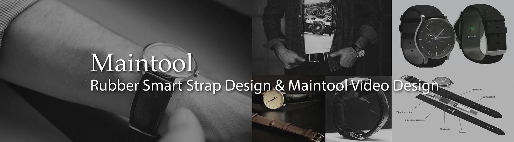
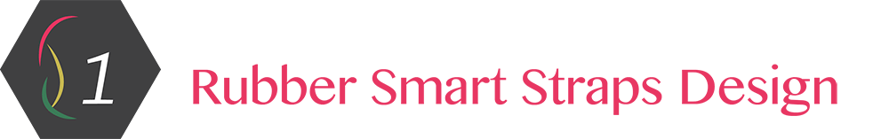
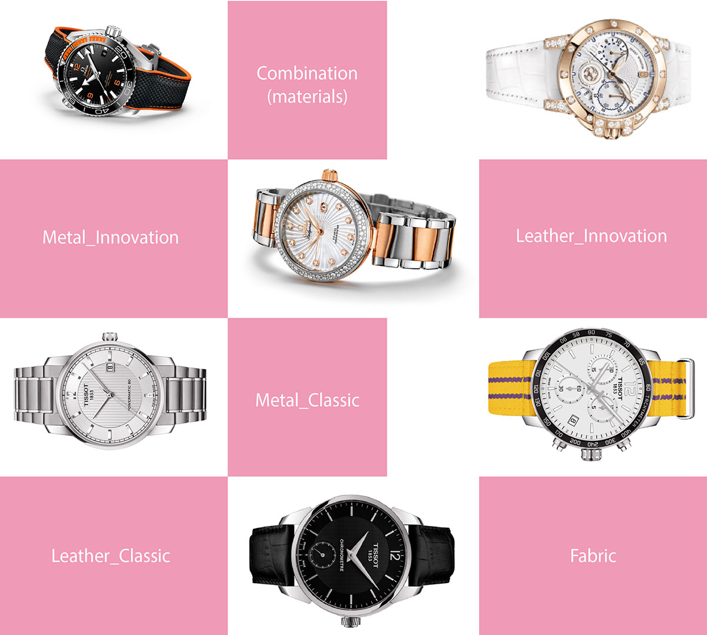
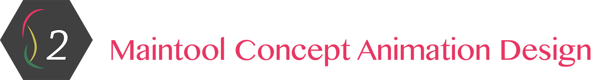
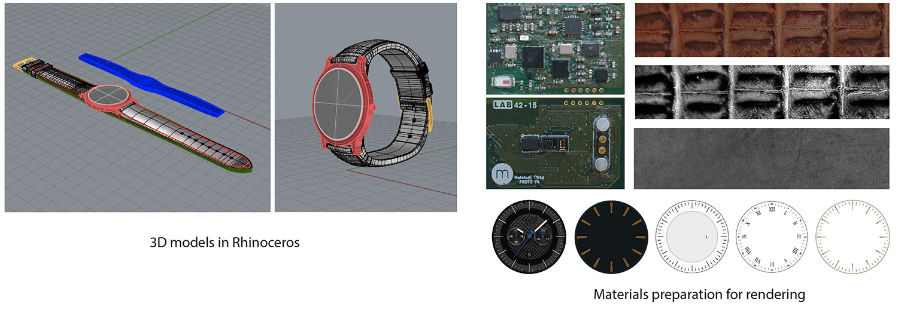

Design Concept
Based on watch strap research, I designed 7 series of rubber smart strap, namely simple & smooth, border, lines, curves, patterns, mixed lines, sports. There are 5 or 6 types of rubber straps for each series.



April to June 2016
Product Design
Illustration
Animation
Product Design Intern
Maintool, Paris
Advised by senior product designer Frederic.martin
Smart rubber straps design
Maintool video design
3D models building & 2D illustration

In a world that is becoming more connected every day, many of you are now faced with a dilemma:
do I wear my classic watch or do I wear my smartwatch?
But what if you could have the best of both worlds?
Maintool provides the first leather smart strap for the classic watch. Maintool builds
smart straps that can be fitted to any
regular wristwatch without compromising
design, brand, and sentimental value.
As a product design Intern in Maintool, the first task I got was to design rubber smart straps. At present, Maintool only provides leather smart straps and we want to expand our business field. So the rubber smart starps design is quite essential.
At first, I did a generally research about watch strap design, mainly from Tissot, Balmain, Blancpain, Chopard, Mido, etc. Such a research on 26 watch brands allowed me to get a sense of watch strap design, considering from color, shape, pattern, materials. I divided watch straps into 6 types, leather_innovation, leather_classic, metal_innovation, metal_classic, fabric, combination.
Having an overview of the watch straps design, next step was rubber watch strap research. I divided rubber straps into 8 types , cute & thin, simple & modern, sports & powerful, gentleman & elegant, bright & elegant, sports & leisure, colorful & elegant, simple & cool.

Based on watch strap research, I designed 7 series of rubber smart strap, namely simple & smooth, border, lines, curves, patterns, mixed lines, sports. There are 5 or 6 types of rubber straps for each series.

In order to get investment successfully in July, 2016. A clear and attractive Maintool concept video was proposed. Within the video, we wanted to make a 3D animation of smart strap to explain who Maintool was. I was responsible for the animation designing.
Before designing animation, I skeched drafts to explain different scenes in the animation.
I used Rhinoceros to design the 3D Models and Keyshot to do the rendering and animation.

Thanks to my supervisor in Maintool, Fred, I learned a lot of practical design skills from him, such as design aesthetics in Enrope, design software skills, and photography skills. Maintool based on Mardrid and there is a small office in Paris.
© 2017 My Profile. All Rights Reserved | Design by Chenghong